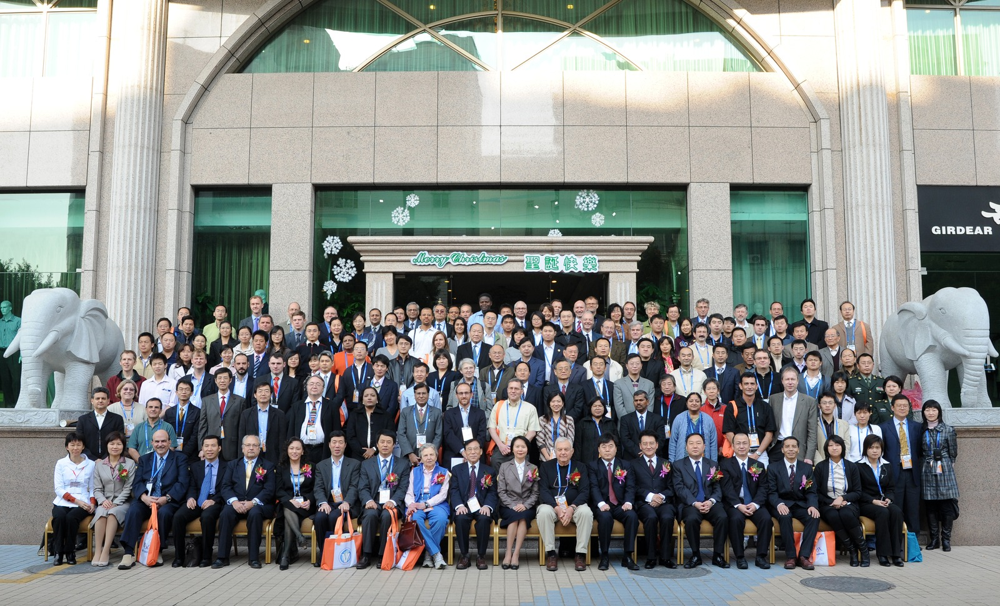
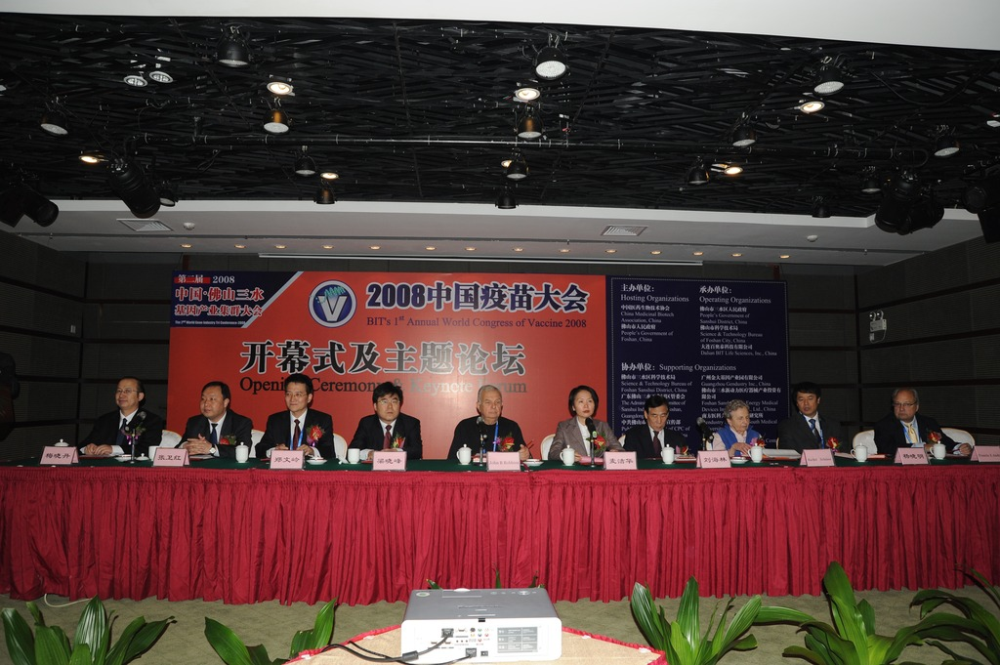
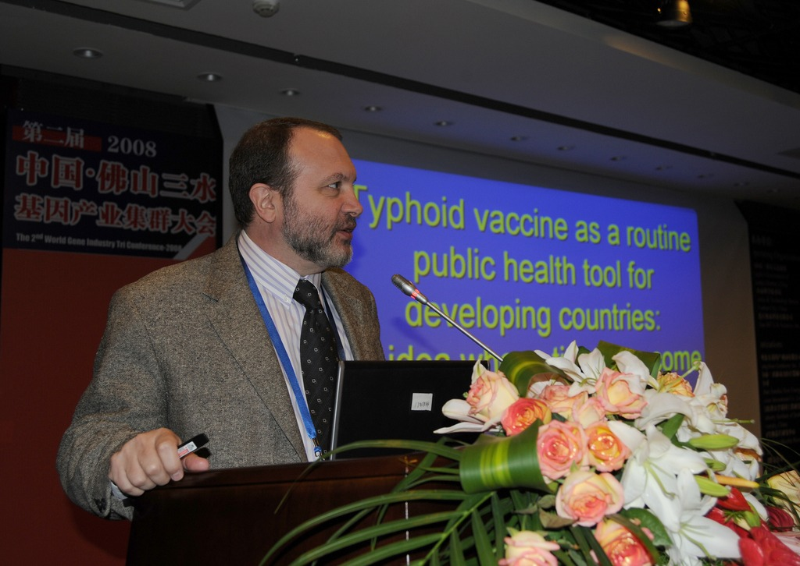
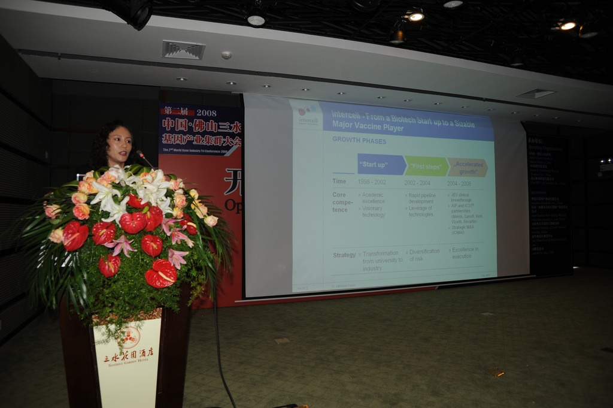
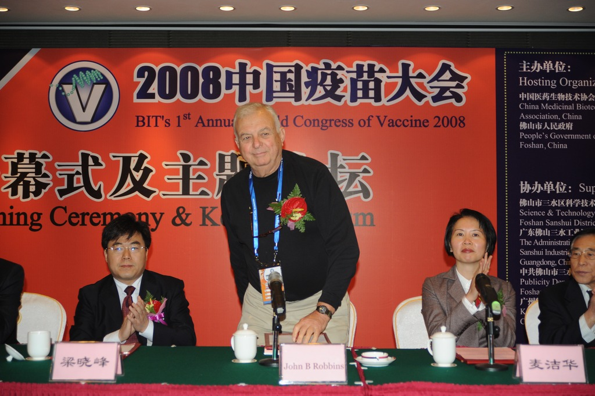
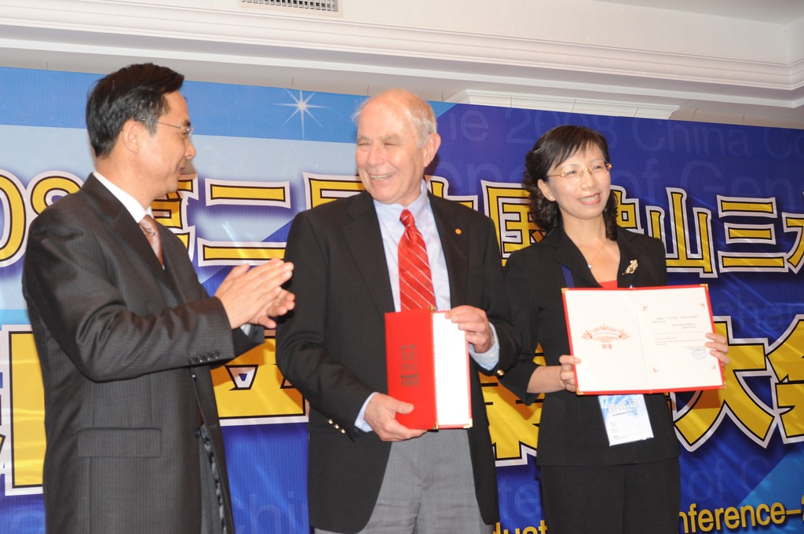
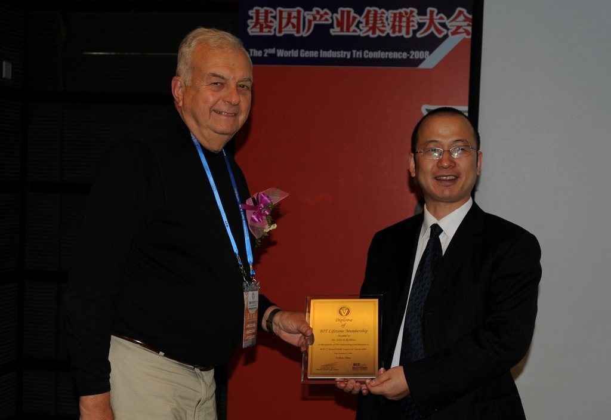
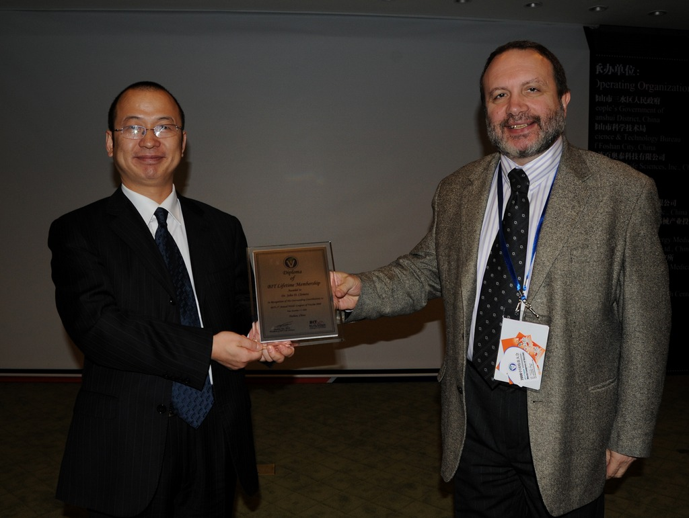
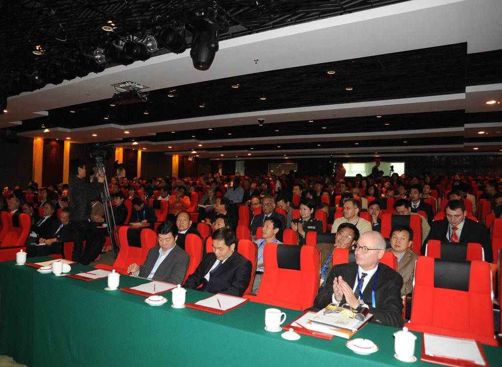

2008年12月1日-5日在广东佛山三水花园酒店举行了「2008中国疫苗大会」。本次会议主题为「打造疫苗领域奥运科技平台」，由中国医药生物技术协会及广东佛山市人民政府主办，佛山市三水区人民政府、佛山市科学技术局、大连百奥泰科技有限公司承办，是本年度规模最大、影响范围最广、最具国际影响力的疫苗盛会。会议涉及疫苗流行病学、疫苗公共卫生与安全措施等政策法规、人类各重大疾病疫苗研究最新突破、新兴传染疾病疫苗动态及前沿技术开发、动物及水产疫苗开发、及国际项目合作与资源整合对接。
本届大会有幸邀请到了美国国立儿童健康与人类发育研究所所长、b型流感嗜血杆菌疫苗发明人——「多糖疫苗之父」John B Robbins 博士，世界卫生组织国际疫苗研究所所长 John D. Clemens 博士，奥地利 Intercell 公司副总裁 Katherine Cohen 博士，美国百特公司副总裁 Peter Khoury 博士，比利时 GSK 生物公司前副总裁 Francis E. André 博士，中国疾病预防控制中心免疫规划中心主任 Xiaofeng Liang 博士等近300余位国内外疫苗领域的专家和企业高管参与交流与合作项目对接，他们带来了疫苗领域最新科研进展和市场趋势资讯。









